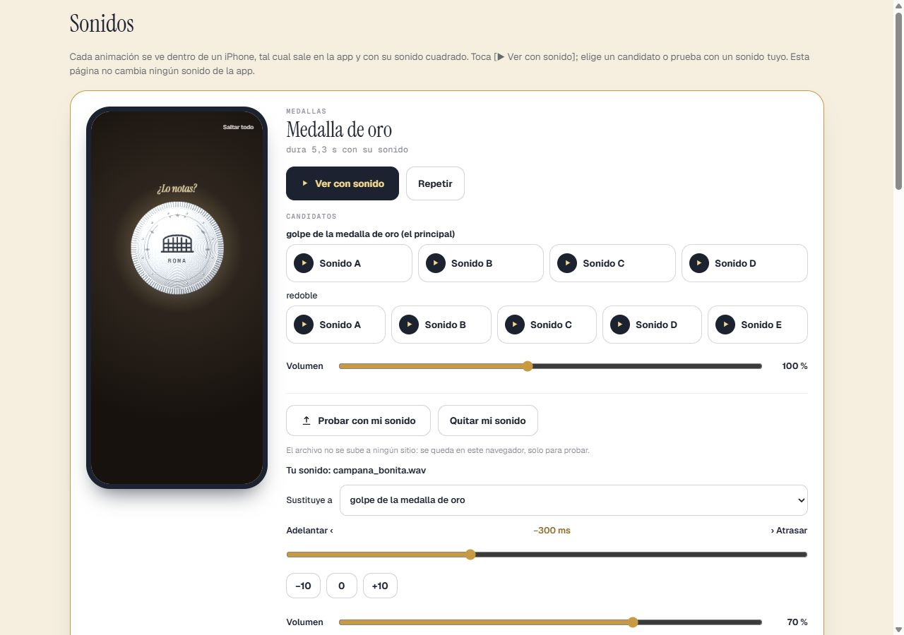
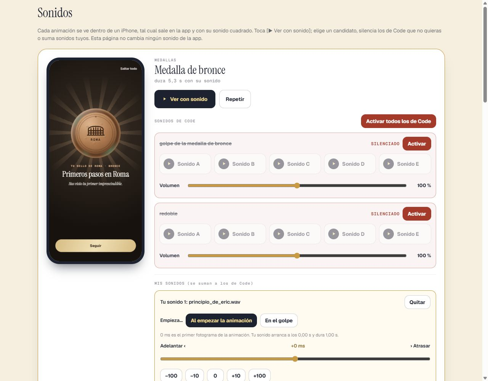
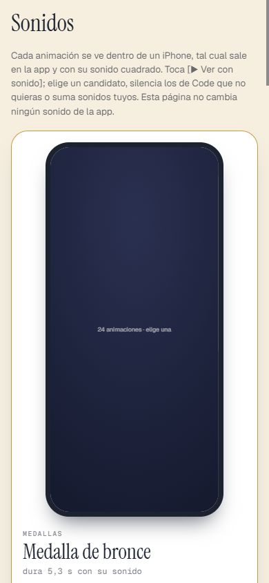

Probar con mi sonido (antes) / capas y línea de tiempo (después)

Antes

Después
En el iPhone

Lista de comprobación de esta tanda
Ya no existe «Sustituye a»: los sonidos de Eric se suman a los de Code.
Cada sonido de Code (golpe, redoble, chispas…) tiene su fila con candidatos A–E, [Silenciar] y su volumen de 0 a 200 %. Arriba, [Silenciar todos los de Code].
Los sonidos de Eric son capas: [Probar con mi sonido] y [+ Añadir otro sonido mío], cada uno con nombre, volumen, barra de ms, «Empieza…» y [Quitar].
«Empieza…»: «Al empezar la animación» (0 ms = primer fotograma, por defecto) o «En el golpe» (0 ms = golpe / final).
La barra de ms va de −duración a +duración, de 10 en 10, con −100 / −10 / 0 / +10 / +100.
Adelantar de verdad: si un sonido cae antes del primer fotograma NO se recorta; la animación espera y la página lo dice.
Línea de tiempo con una fila por sonido que suena, raya verde (empieza la animación) y raya roja (golpe / final) con su rótulo.
«Lo elegido» dice todo lo que suena en cada animación (silenciados, candidato y volumen de cada sonido, y los míos con su momento).